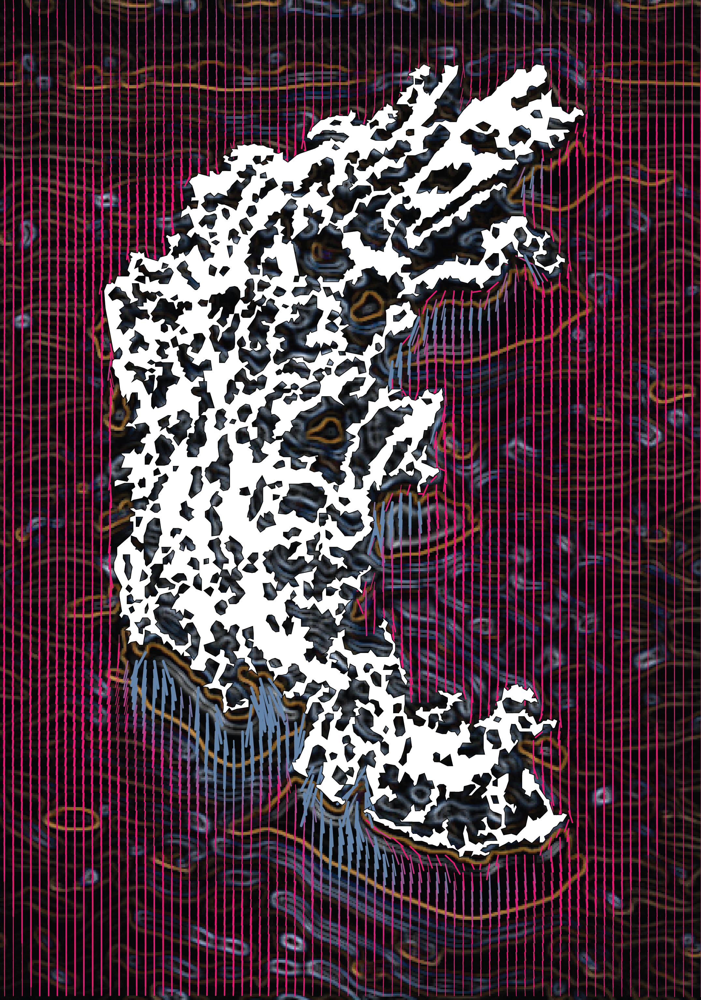
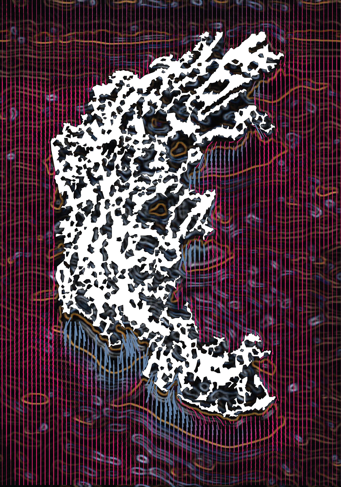
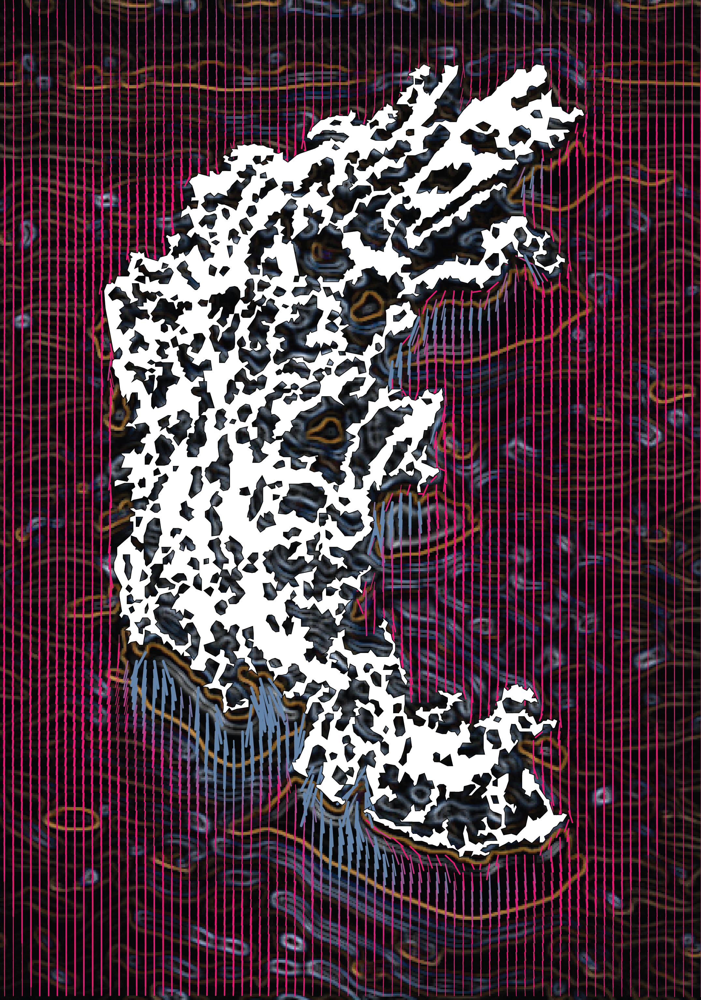
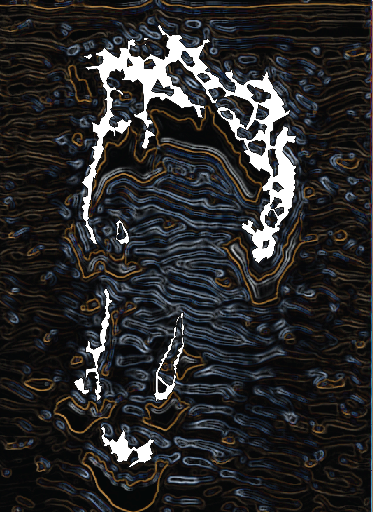
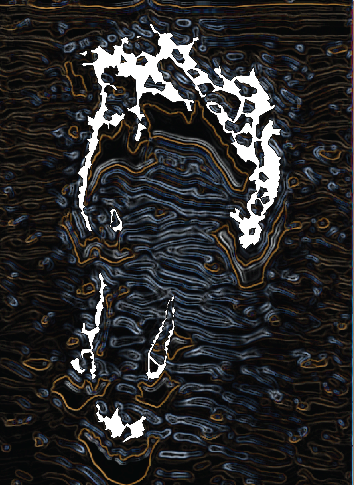
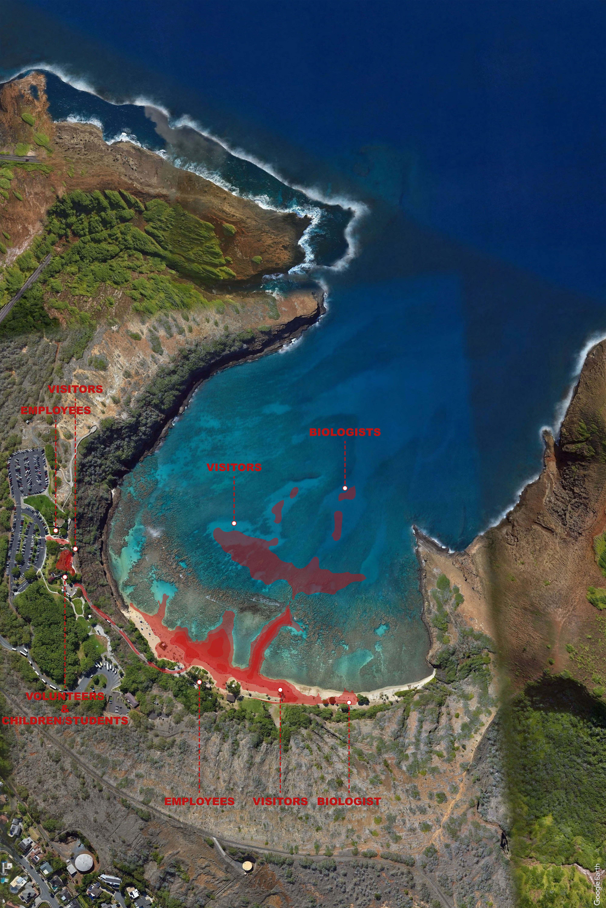
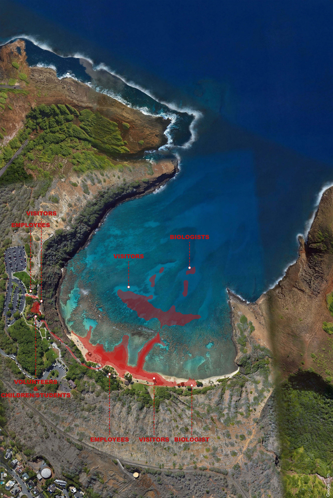

Coral reefs are rapidly dying due to climate change and anthropogenic activities. Because these sensitive ecosystems are critical to ocean health, new approaches for designing synthetic reef systems have emerged in the last 50 years to sustain and promote coral diversity. However, despite their success, these studies lack the larger-scale and higher-level ecological analysis that accounts for anthropogenic threats to these ecosystems. Without considering how contemporary near-shore environments are hybrid, novel landscapes, artificial reefs are not designed for shared ecologies.
This study proposes a novel simulation framework that expands the existing analytical modeling methods, allowing us to visualize and test underwater eco-spatial phenomena within dynamic systems to better identify a design space for intervention with the goal of mitigating the conventional human-reef relationship through tactically choreographing sedimentation.
The simulation sequence proposes an overlay of (a) CFD analysis with (b) computational sand dune formation and (c) physical experimentation using a simulated sand and water table to study the sediment response to morphological intervention. The goal is to identify zones of intervention within the dynamic underwater landscape that encourage strategic increase or decrease of sediment build-up, nurturing coral health.



 



.jpg) 
